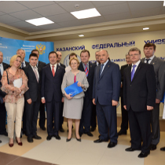
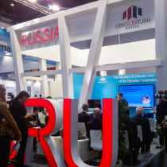
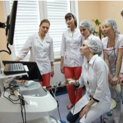
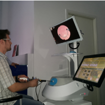

Виртуальный симулятор
эндоваскулярной хирургии
Кто мы
Компания ООО «Эйдос—Медицина» – единственный в России производитель виртуальных медицинских тренажеров – входит в пятерку мировых разработчиков симуляционного медицинского оборудования.
Компанией был разработан целый ряд симуляторов, по своим характеристикам не уступающих зарубежным аналогам, включая симуляторы в области лапароскопии, эндоваскулярных вмешательств, гинекологии и акушерства, экстренной медицины, эндоурологии и гибкой эндоскопии.
ООО «Эйдос-Медицина» (резидент Инновационного центра «Сколково») является инициатором проекта Регионального Инжинирингового Центра медицинских симуляторов «Центр Медицинской Науки» в г.Казани, утвержденного председателем наблюдательного совета Агентства стратегических инициатив Российской Федерации Путиным В.В.
Основными потребителями продукции, производимой компанией, являются медицинские ВУЗы, учреждения здравоохранения, Центры коллективного пользования и Центры повышения квалификации.
Наша миссия
Наша компания основана для того, чтобы, объединяя собственные научно-исследовательские и опытно-конструкторские разработки с передовыми технологиями и опытом представителей ведущих медицинских вузов России и практикующих врачей, создавать инновационные медицинские тренажерные комплексы.
Мы верим, что наша продукция вносит вклад в модернизацию системы здравоохранения, ведь именно симуляторы все чаще используются для обучения и объективной оценки обучающихся во многих областях деятельности человека, предполагающих высокие риски.
Новости

Здравоохранение 2014
Компания «Эйдос-Медицина» приняла участие в 24-ой международной выставке «Здравоохранение-2014», проходившей в период с 8 по 12 декабря в г.Москва и ставшей...

MEDICA – 2014
Компания ООО «Эйдос-Медицина» представила экспозицию медицинских симуляторов В рамках международной выставки MEDICA-2014 в г.Дюссельдорф (Германия).

18 ежегодный конгресс ТТО в Белеке
1 – 5 апреля в г.Белек (Турция) состоялся 18 ежегодный конгресс Турецкого Торакального Общества (ТТО). ТТО объединяет в себе более 3900 членов, 15 филиалов, 18...

Здравоохранение Беларуси
24 – 27 марта компания «Эйдос-Медицина» представила свои медицинские симуляторы в ходе выставки «Здравоохранение Беларуси». Эта выставка - одно из главных событий года...